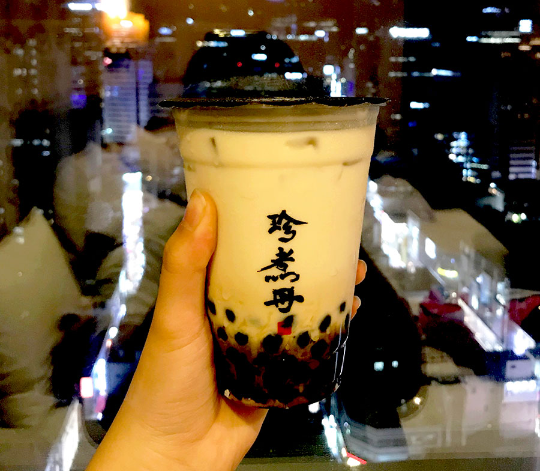
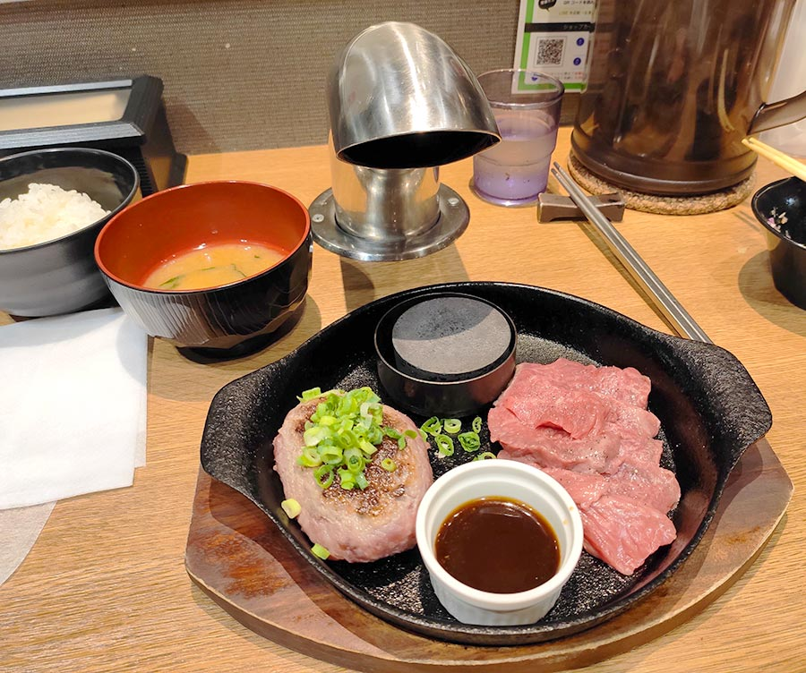
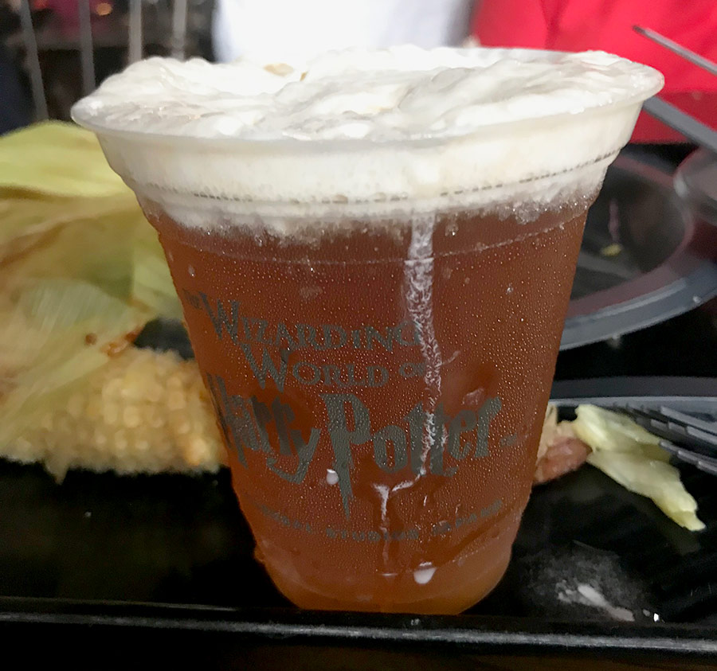

Food Guide to East Asia

Taiwan
In Taiwan you can find a large array of street food snacks. I visited Taipei, and here are my recommendations:
The Night Markets
At the famous Taipei Night Markets there is an amazing selection of asian street food. Here you can find a combination of traditional food and local delicacies.

We visited our favourite sponge cake place in the Night Market. This place is famous for its massive, light and fluffy sponge cakes, which can be served plain, with berries or with cheese.
There was also a massive food court underground where all the locals go to eat. Here, there was a ton of unique food places, and my parents favourite was this seafood one which sold delicous oysters and other seafood.

Boba Tea
Taiwan is also the epicenter of bubble tea! Practically anywhere you go in the Taipei CBD, you can find a bubble tea store. In Taipei I visited a lot of bubble tea stores, and I made sure to try both the brown sugar milk tea and the original style bubble milk tea. We even went to try bubble tea from the original creators of bubble tea- Tsuen wan sumn. Although it was a bit pricey, it was worth the experience in opinion, and I recommend trying the original bubble tea out!

Jioufen
In Taiwan we also went to Jioufen. There, we tried a lot of local delicacies. There was a lovely ice-cream pancake with peanuts and others in it, and I would recommend it if you go there. There was also a large selection of nougat stores. I tried the classic nougat one and it was very cheap as well as the right amount of chewy and soft.
Korea
Korea had a large range of both traditional and street snack foods. We travelled to Seoul, and there we made sure to try some of the unique foods that we wouldn’t find back in New Zealand.
Myeongdong
In the streets of Myeongdong, there is a bunch of street food vendors amongst the shops. There is a large range of Korean street food there, and a lot of dishes that are very unique and worth trying. My personal favourite was taghulu, which is fruit coated in a hard casing of sugar, but my parents really enjoyed the cheesy lobster snacks, and the spicy ttleboki.

Korean Chicken
Korea was famous for its fried chicken, and so it was a must that we had to try some there. We ended up at a famous restaurant dedicated solely to fried chicken. We tried 3 different types of chicken and had it with salad and rice. It was very filling and such a good price for the amount of food you got.

Korean BBQ
Another must have in Korea is korean bbq. Korean bbq is where there is raw meat and a bunch of sides, and you cook the food right in front of you on a hot plate. It is absolutely delicious, and my favourite aspect is the fact that you get a large range of side dishes which are generally all free!

Japan
Japan had amazing food. I enjoyed all of the food in Japan, and everywhere you went, there was bound to be somewhere great to eat.
Sushi Trains
In Japan, we went to sushi trains a lot. Sushi trains are very popular in Japan, and the sushi there is delicious. The sushi is so different from New Zealand sushi, and it tastes so much better. I recommend trying the nigiri style sushi because that was my favourite.
Hot Plate
We also tried this hot plate thing in Japan, similar to korean bbq. They gave you a personal hot plate and a raw meat patty and side dishes, and you cooked it to your liking. I enjoyed this very much, as it was an entertaining thing to do and the food tasted amazing, I would recommend trying this out if you go. I also really enjoyed the salad at this place. The salad had a very tasty dressing, and had free salad refills.

Kyoto
In Kyoto, we stopped by the famous red gates and visited a few of the temples nearby. The whole area had a bunch of great food options, and there we tried some mochi and yakitori. My favourite was the chicken and leek teriyaki-type-flavoured yakitori. I liked trying the barbecued rice balls as well which were dipped in a yummy sauce. All of these were around by the
Universal Studios
In Osaka, we went to the Universal Studios, so we made sure to try some of the specialty food there.
Osaka Universal Studios had the Harry Potter themed area, so I tried the butter beer. I found the butter beer to be similar to a spider (the lemonade and ice cream drinks) and I actually liked it a lot. However, my parents found it way too sweet. Some of the other treats in Universal Studios included minion shaped waffles. These were very cute, but flavour wise they were a bit bland.

Singapore
In Singapore, we made sure to try a wide variety of food, as the city had a lot to offer. Some of my personal favourites were jollibees, the Hawker Centers and Singapore Chilli Crab.
Jollibees
Jollibees is a fast food chain which is very popular in Asia. It’s menu is quite different from the traditionally western fast food restaurants and I enjoyed it a lot. I tried the fried chicken and mashed potatoes and it was delicious. I found that the chicken was a lot juicer than fried chicken back in NZ. It is definitely worth trying a couple of their uncommon menu items in my opinion.
Hawker Centers
Singapore is very famous for its Hawker Centers. Hawker centers are these food court-type places with a wide range of food. At the hawker centers, we made sure to try the famous michelin star hawker chan chicken and the michelin star hainanese chicken rice. Hawker centers are a great source of cheap and tasty food. The food definitely lived up to its expectations, as it was absolutely delicious, and I would definitely recommend going there and trying it if you ever go to Singapore.

Singapore Chilli Crab
We also tried the famous singapore chilli crab in Singapore. Singapore chilli crab is one of my all time favourite dishes. At the place we went to, they gave you a giant crab surrounded by delicious sauce. Chilli crab is super flavoursome, and I definitely recommend trying it with mantous (the chinese steamed buns). We went to a singapore chilli crab place called Jumbo Seafood, and although it was quite pricy, the food was amazing and in my opinion worth the price.